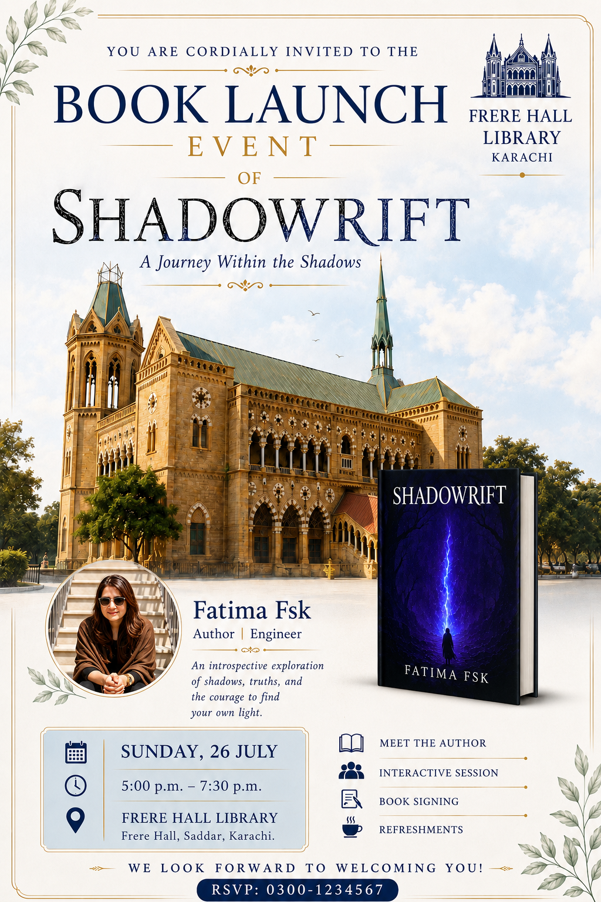
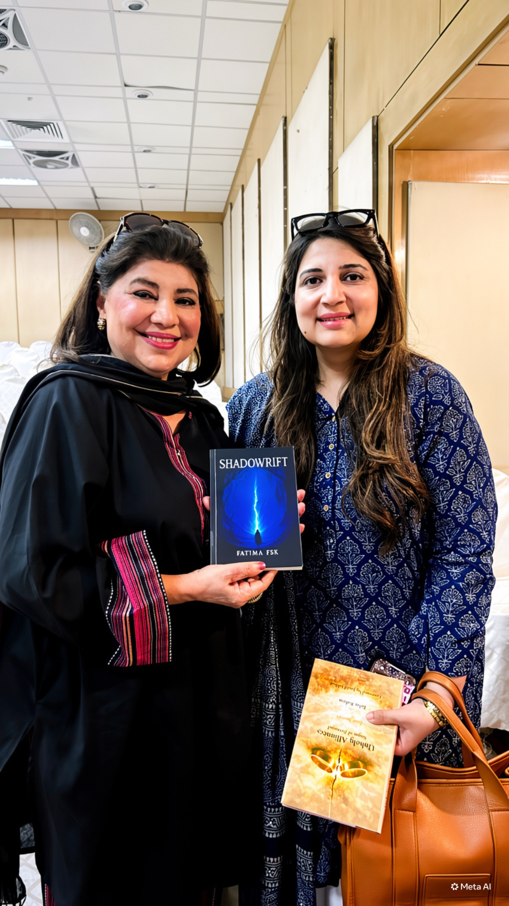
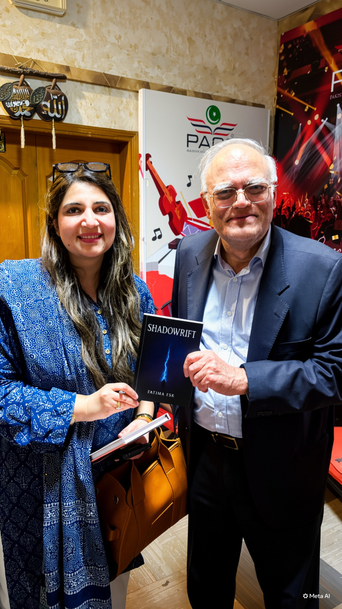
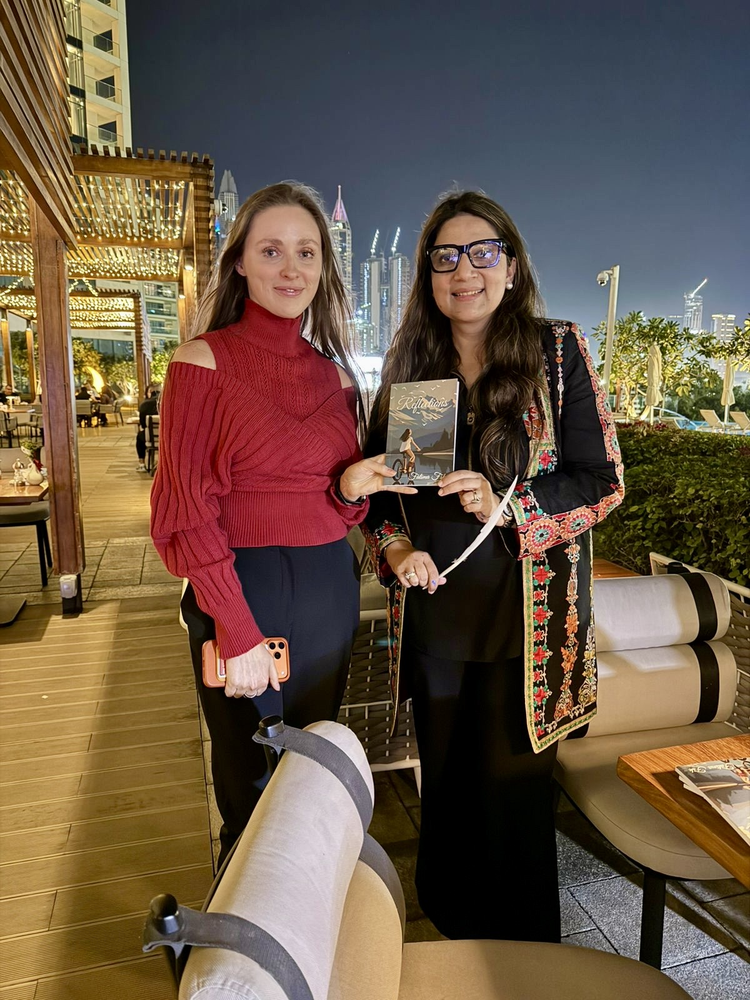

01 / 2025
Reflections
A journey inward — exploring identity, emotional patterns, resilience and the stories we inherit.
PKR 1,200
A journey inward — exploring identity, emotional patterns, resilience and the stories we inherit.

An exploration of the unseen patterns that shape how we think, live and become.
Prefer to buy directly? Fill in your details below. When you submit, WhatsApp will open with your order information ready to send directly to Fatima.
For Amazon orders, use the Amazon button in the book section above.
The launch became a wider literary conversation — bringing readers, cultural voices and ideas of self-discovery into the same room.




Selected moments from conversations around Reflections, bringing its themes of identity, nature, family and awareness into lived encounters.


Read the books as two points along the same inquiry: what happens when we become more willing to observe what is happening within us?